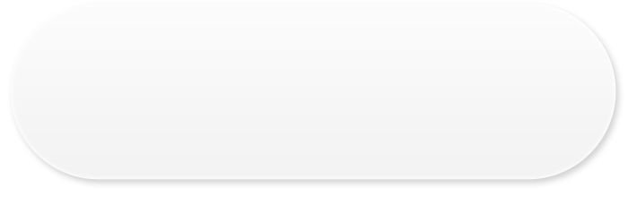

<!doctype html>
<html>
  <head>
    <meta http-equiv="content-type" content="text/html;charset=utf-8">
    <style type="text/css">
      html, body{
        font-size: 18px;
        color: #333;
		margin:0;
      }
      p{
        margin:10px;
      }
      .clearfix:after{
        clear: both;
        content: ".";
        display: block;
        height: 0;
        font-size:0;
        visibility: hidden;
      }
      .loading{
        background: url("images/loading.gif") no-repeat 0 0 transparent;
        width: 32px;
        height: 32px;
        line-height: 32px;
        position: absolute;
        top: 40%;
        left: 50%;
        margin-left: -16px;
      }
      #main{
        padding: 5px 5px 5px 10px;
      }
      .mix{
        margin: 20px 0;
        background: url("images/line_bg02.png") repeat-y 17px 0 transparent;
      }
      .mix .top-bg, .mix .bottom-bg{
        width: 8px;
        position: relative;
        left: 17px;
      }
      .mix .top-bg{
        background: url("images/line_bg01.png") no-repeat 0 0 transparent;
        top: -2px;
        height: 5px;
      }
      .mix .bottom-bg{
        background: url("images/line_bg03.png") no-repeat 0 0 transparent;
        bottom: -5px;
        height: 5px;
      }
      .mix .item{
        margin: 10px 0;
      }
      .mix .timeline{
        float:left;
      }
      .mix .timeline .icon{
        width:40px;
        height:40px;
        position: relative;
        top: 10px;
      }
      .mix .content{
        float: left;
        margin-left: 5px;
      }
      .mix .audio-play{
        position: relative;
      }
	  .mix .audio-play .board{
	    position: absolute;
		left: -2px;
	  }
      .mix .audio-play .play{
        position: absolute;
        left: 8px;
        -webkit-tap-highlight-color: rgba(255, 255, 255, 0);
      }
      .mix .audio-play .info{
        position: absolute;
        line-height: 18px;
		font-size: 12px;
      }
      .mix .audio-play .info .title, .mix .audio-play .info .desc{
        text-overflow: ellipsis;
        overflow: hidden;
      }
      .mix .audio-play .info .title{
        color: #000;
        font-weight: bold;
        white-space: nowrap;
      }
      .mix .audio-play .info .desc{
        color: #999;
      }
      .mix .audio-play .info .desc span{
        margin-right: 20px;
      }
      .mix .content .photo{
        border: 1px solid #F1EDED;
        padding: 5px;
      }
    </style>
  </head>
  <body>
    <div id="main"></div>
    
    <script type="text/javascript">
      (function(){
        function loading(){
          var main = document.querySelector('#main');
          main.innerHTML = '<div class="loading"></div>';
        }
        
        function build_audio_html(mix_id, audio, width){
		  var bw = width, bh = parseInt(bw / 3.2), pwh = parseInt(bw / 5.1), pt = parseInt(pwh / 3.4), il = pwh + 20, it = parseInt(bh / 2 - 18), tw = bw - il - 30, id = 'audio' + Date.parse(new Date());
          var res = ['<div class="item clearfix audio" time="0" id="' + id + '" style="min-height:' + bh + 'px;">'];
		  res.push('<div class="timeline"></div>');
		  res.push('<div class="content"><div class="audio-play">');
		  res.push('');
		  res.push('<div class="info" style="left:' + il + 'px;top:' + it + 'px;"><div class="title" style="width:' + tw + 'px">' + audio.title + '</div><div class="desc" style="width:' + tw + 'px">');
		  res.push('<span class="size">' + audio.getAttribute('size') + '</span><span class="duration">' + audio.getAttribute('fulltime') + '</span>');
		  res.push('</div></div></div></div></div>');
		  return res.join('');
        }
        
        function build_text_html(text, width){
          var res = ['<div class="item clearfix text" time="' + text.getAttribute('starttime') + '">'];
		  res.push('<div class="timeline"></div>');
		  res.push('<div class="content" style="width:' + width + 'px">' + text.innerHTML + '</div></div>');
		  return res.join('');
        }
        
        function build_photo_html(photo, width){
		  var w = parseInt(width / 3) - 15;
          return ['', photo.getAttribute('starttime')];
        }
		
		function build_photos_html(photos, time, width){
		  var res = ['<div class="item clearfix photo" time="' + time + '">'];
		  res.push('<div class="timeline"></div>');
		  res.push('<div class="content" style="width:' + width + 'px">' + photos.join('') + '</div></div>');
		  return res.join('');
		}
        
        function resolve(html, deviceWidth){
		  var main_padding = 10, timeline_icon = 32, content_margin = 5;
		  var width = deviceWidth - main_padding - timeline_icon - content_margin;
		  
          return html.replace(new RegExp('<mix.*?>.+?</mix>', 'gim'), function(_mix_str){
            var dom = document.createElement('div');
			dom.innerHTML = _mix_str;
			var _mix = dom.querySelector('mix');
            if(_mix){
              //抛弃空的mix
              if(_mix.childElementCount > 0){
                var res = [], id = _mix.getAttribute('id'), photos = [], phototime = 0, tmp = '';
                //res.push('<div class="mix" ' + (id? 'id="' + id + '" ' : '') + 'timestamp="' + _mix.getAttribute('timestamp') + '">');
                res.push('<div class="mix" id="' + id + '">');
                res.push('<div class="top-bg"></div><div class="wrap">');
                var children = _mix.childNodes;
                for(var i = 0; i < children.length; i++){
                  var child = children[i];
                  //排除非标准的node
                  if(!/^ln-/igm.test(child.nodeName)) continue;
                  
                  var tagName = child.tagName.toLowerCase();
                  switch(tagName){
                    case 'ln-audio': tmp = build_audio_html(id, child, width);break;
                    case 'ln-text': tmp = build_text_html(child, width);break;
                    case 'ln-photo':
					  var _r = build_photo_html(child, width);
					  photos.push(_r[0]);
					  if(phototime > parseInt(_r[1]) || phototime == 0) phototime = _r[1];
					  break;
                  }
				  if(((i + 1 == children.length) || (tagName != 'ln-photo')) && photos.length > 0){
				    res.push(build_photos_html(photos, phototime, width));
				    photos = [], phototime = 0;
				  }
				  if(tagName != 'ln-photo'){
				    res.push(tmp);
				    tmp = '';
				  }
                }
                res.push('</div><div class="bottom-bg"></div></div>');
                return res.join('');
              }
            }
            return '';
          });
        }
		
		function photo_preview(){
		  var photos = document.querySelectorAll('img.photo');
		  for(var i = 0; i < photos.length; i++){
		    photos[i].addEventListener('click', function(e){
             //回调android方法
			 window.View.viewResource(this.getAttribute('id'), '');
			}, false);
		  }
		}
		
		function audio_listener(){
		  var audios = document.querySelectorAll('img.play');
		  for(var i = 0; i < audios.length; i++){
		    audios[i].addEventListener('click', function(e){
			  var target = this.getAttribute('target'), belong = this.getAttribute('belong');
			  var icon = document.querySelector('#' + target + ' .timeline .icon');
			  updateIconState(icon);
			  if(this.getAttribute('play') == 0){
			    this.setAttribute('play', 1);
				this.setAttribute('src', 'images/play_pause.png');
				slide(belong, 0);
			  }else{
			    this.setAttribute('play', 0);
				this.setAttribute('src', 'images/play_normal.png');
			  }
			  //回调android方法
              window.View.viewResource(this.getAttribute('id'), belong);
			}, false);
		  }
		}
		
		function cleanIconState(id){
		  if(!id) return;
		  var icons = document.querySelectorAll('#' + id + ' .item .timeline .icon[status=active]');
		  for(var i = 0; i < icons.length; i++){
		    updateIconState(icons[i]);
		  }
		}
		
		function updateIconState(icon){
		  if(!icon) return;
		  var src = icon.getAttribute('src');
		  if(src){
		    var res = src.replace(new RegExp('_normal|_active', 'gim'), function(s){
			  if(s == '_normal'){
			    icon.setAttribute('status', 'active');
			    return  '_active';
			  }else{
			    icon.removeAttribute('status');
			    return '_normal';
			  }
			}, false);
			icon.setAttribute('src', res);
		  }
		}
        
        function slide(id, second, speed){
		  var clientHeight = document.documentElement.clientHeight;
		  var scrollHeight = document.documentElement.scrollHeight;
		  if(clientHeight >= scrollHeight) return false;
		  if(!speed) speed = 100;
		  
		  var target = document.querySelector('#' + id + ' .item[time="' + second + '"]');
		  if((target)){
		    cleanIconState(id);
			//if(target.className.match(/ audio/i) === null) updateIconState(target.querySelector('.timeline .icon'));
			updateIconState(target.querySelector('.timeline .icon'));
			var pos = target.offsetTop - 5, current_pos = document.body.scrollTop, distance = pos - current_pos, duration = Math.abs(distance) / speed;
			var it = setInterval(function(){
			  if(distance > 0){
			    current_pos = current_pos + duration;
				if(current_pos >= pos){
				  current_pos = pos;
				  clearInterval(it);
				}
			  }else{
			    current_pos = current_pos - duration;
				if(current_pos <= pos){
				  current_pos = pos;
				  clearInterval(it);
				}
			  }
			  document.body.scrollTop = current_pos;
			}, 1);
		  }
        }
        
        /*
         * 常见问题
         * 1. 单引号问题:如果传递过来的mix元素中的onclick函数参数有单引号则会导致语法报错，需要在java中调用时替换掉
         * 2. ID命名不规范: ID命名不能以数字开头
         * 3. 时间轴在k900上不对齐的问题，暂时无法解决，在内容添加任意文字都会导致1px的误差，非用div布局的原因
         * 4. 首次点击时不能播放/滑动的问题，1与2两个bug都会导致不能播放或滑动
         * 5. 点击图片按钮时有背景的问题: -webkit-tap-highlight-color: rgba(0, 0, 0, 0);
         * 6. 对于标题以-连起来的标题，overflow及text-overflow不起作用，定义强制单词换行:white-space: nowrap;
         */
        mix = {
		  /*
		   * 预加载UI
		   */
		  loading: function(){
		    loading();
		  },
		  
		  /*
		   * 初始化mix UI
		   * @html  mix字符串
		   * @deviceWidth 设备宽度，最小265px
		   */
          init: function(html, deviceWidth){
		    //if(deviceWidth < 265) deviceWidth = 265;
            var main = document.querySelector('#main');
            main.innerHTML = resolve(html.replace(/\r|\n/igm, ''), deviceWidth);
			photo_preview();
			audio_listener();
          },
          
          /*
           * 暂停或开始
           * @id  mix ID
           */
          startOrPause: function(id){
            var play = document.querySelector('#' + id + ' .audio-play .play');
            if(play){
			  if(play.getAttribute('play') == 0){
			    play.setAttribute('play', 1);
				play.setAttribute('src', 'images/play_pause.png');
			  }else{
			    play.setAttribute('play', 0);
				play.setAttribute('src', 'images/play_normal.png');
			  }
            }
          },
          
		  /*
		   * 滑动
		   * @id mix ID
		   * @second 当前播放的秒数
		   * @speed  在指定的时间内完成动画，默认为100ms
		   */
          slideTo: function(id, second, speed){
            slide(id, second, speed);
          },
		  
		  /*
		   * 播放结束还原UI
		   * @id mix ID
		   */
		  end: function(id){
		    cleanIconState(id);
			var play = document.querySelector('#' + id + ' .audio-play .play[play="1"]');
			if(play){
			  play.setAttribute('play', 0);
		      play.setAttribute('src', 'images/play_normal.png');
			}
		  }
        }
      })();
      
      window.onload = function(){
        var html = ['<mix id="mix1" timestamp=123123123123>'];
        html.push('<ln-photo src="images/demo/2.jpg" id="img1" class="lenovo-resource-img" onclick="window.View.viewResource(ff)" starttime=11></ln-photo>');
        //html.push('<ln-audio src="" id="audio0" size="12.08KB" title="Voice0001_0002_0003_0004_part01.aac" class="lenovo-resource-audio" onclick="window.View.viewResource(aa)" fulltime="01:26"></ln-audio>');
        html.push('<ln-audio src="" id="audio0" size="12.08KB" title="9af053e7-79d3-42ed-a764-c9fe6b0e7564.mp3" class="lenovo-resource-audio" onclick="window.View.viewResource(aa)" fulltime="01:26"></ln-audio>');
        html.push('<ln-photo src="images/demo/1.jpg" id="img0" class="lenovo-resource-img" onclick="window.View.viewResource(ff)" starttime=10></ln-photo>');
        html.push('<ln-photo src="images/demo/2.jpg" id="img1" class="lenovo-resource-img" onclick="window.View.viewResource(ff)" starttime=11></ln-photo>');
		html.push('<ln-photo src="images/demo/3.jpg" id="img2" class="lenovo-resource-img" onclick="window.View.viewResource(ff)" starttime=9></ln-photo>');
		html.push('<ln-photo src="images/demo/4.jpg" id="img3" class="lenovo-resource-img" onclick="window.View.viewResource(ff)" starttime=10></ln-photo>');
		html.push('<ln-text class="lenovo-resource-text" starttime=20>男士们经常被问到的一个问题是“老婆和妈妈同时掉水里，你先救谁？”如今，这个问题有了升级版“老婆和狗狗同时掉水里，你先救谁？”如今，南非男子格兰汉姆·安利用实际行动给出了答案：先救狗狗。</ln-text>');
		html.push('<ln-photo src="images/demo/1.jpg" id="img4" class="lenovo-resource-img" onclick="window.View.viewResource(ff)" starttime=30></ln-photo>');
        html.push('</mix>');
        html.push('<p>他守候在会所的大门外，蹑足于宾馆的走廊中，等待“致命一击”的证据出现。为了取证，他穷尽所能：假装随从，核对账单；购买装置，秘拍偷欢；他甚至做过一个详细计划——混进“二奶”的房间，安上秘密摄像头。受访时，老陈心情不错。他时而用手机看看微博。微博上，法官买春事件正持续发酵。有人评价老陈具备典型的“上海人特点”——思维缜密、耐心细致、隐忍数月、出手刁钻……，有人夸他以专业的手法完成了一场“基督山式的复仇”，当然也有人骂他偷拍隐私，行事下作。</p>')
        mix.init(html.join(''), 320);
      }
    </script>
  </body>
</html>